Items · 60 relics
FIVE TIERS · 32×32 PIXEL ART SHOWN AT 2×
COMMON · 1950% DROP WEIGHT · STACKABLE STAT RELICS
Whetstone+10% damage
Pilgrim's Sandals+8% movement speed
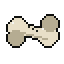
Gambler's Knucklebone+5% crit chance
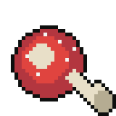
Salted Pork+20 max HP
Tallow Candle+2 HP regen per second
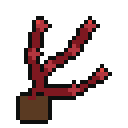
Flagellant's Cord+10% attack speed
Tithe Purse+15% gold from kills
Bone Reliquary+8% XP gain
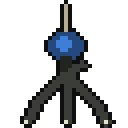
Crowsfoot Charm+12% evasion (diminishing)
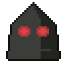
Executioner's Hood+20% damage to enemies above 90% HP
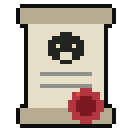
Bounty Writ+15% damage to elites and bosses
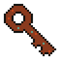
Rusted Key10% chance to open a chest for free
Hermit's EmberStand still 1 s: heal 3% max HP/s
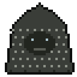
Mourner's Veil+5% move speed; +25% for 2 s after a hit
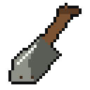
Gravedigger's SpadeVases: 15% chance of an extra pickup
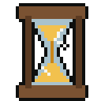
Cracked HourglassStopwatch lasts +2 s
Rosary of Teeth+5% crit chance, +10% crit damage
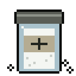
Grave Salt+15 max HP, +5% armour
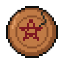
Hex Penny+20% gold from smashed vases
UNCOMMON · 1728% DROP WEIGHT · SIMPLE PROCS AND GEM BOOSTERS
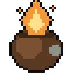
Tinder PouchBurning enemies take +15% damage◆ FIRE GEM
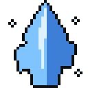
Rime ShardChill +50% duration; Shatter radius +1 m◆ ICE GEM
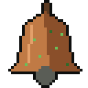
Leper's BellCorrosion stacks deal +20% damage◆ CORROSIVE GEM
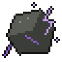
LodestoneStunned enemies take +25% damage◆ ELECTRICITY GEM
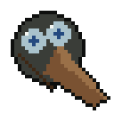
Plague Doctor's Mask+20% damage to enemies with any status
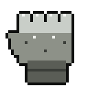
Brute's Gauntlet+20% damage at close range
Tax Collector's Ledger+2.5% damage per chest opened (run)
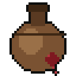
Skin of Bitter Wine+20% damage, −10% max HP
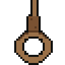
Hangman's NooseCurses one enemy: 25% max HP/s
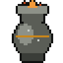
Pyre AshesKills: 3% chance of roast meat (15% HP)
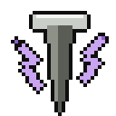
Thunderstruck NailTaking damage stuns nearby enemies
Restless BonesChest or vase summons 2 wraiths for 8 s
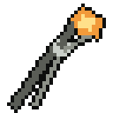
Forgemaster's TongsImbue Station costs 20% less
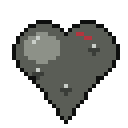
Leaden HeartHeart power-up: +10% damage for 15 s
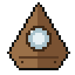
Ouija Planchette3% chance a hit deals 10× damage
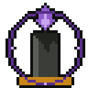
Black CandleEnemies within 3 m take 5 damage/s
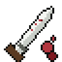
Bloodletting Knife+25% damage, −15 max HP
RARE · 1315% DROP WEIGHT · BUILD PIECES
Pilgrim's Pack+1 projectile for all weapons
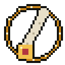
Saint's FingerEvery on-hit effect rolls one extra timeUNIQUE
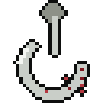
Butcher's HookCrits: 15% chance of a Brutal Crit (×2)
Blood ChaliceCrits: 20% chance to heal 2% max HP
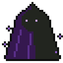
Shade CloakAfter evading: next hit ×2, speed for 3 s
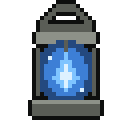
Soul LanternKills: 12% chance of an extra XP gem
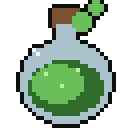
Mire FlaskHits on Corroded: 15% chance of a puddle◆ CORROSIVE GEM
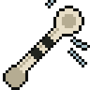
Grave Hound WhistleEvery 15 m, a skeletal hound charges
Gem Cutter's LoupeGem statuses +30% duration and damage
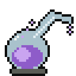
Alchemist's RetortCombos +30% radius, −25% cooldown
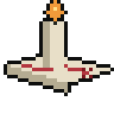
Cartographer's CandleVases, chests and Imbue on the minimap
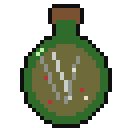
Witch Bottle20% chance to ignore incoming damage
Goat SkullBurning kill: 10% to Ignite all within 3 m
EPIC · 75% DROP WEIGHT · LATE-GAME SCALING
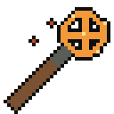
Witch-Hunter's BrandArmour + lifesteal per burning enemy
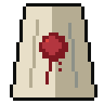
Martyr's ShroudDamage rises as HP falls, up to +60%
Shattered CodexXP gems slice enemies as they fly to you
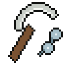
Reaper's SickleKills release 2 homing souls
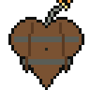
Powder Keg HeartHits: 25% chance to explode for 65%
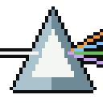
Heretic's PrismCombos +50% damage and heal 1 HP each
Coven Sigil+15% damage per status on the enemy (max +60%)
LEGENDARY · 42% DROP WEIGHT · UNIQUE, RUN-DEFINING
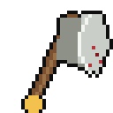
Headsman's Oath1% execute on hit; each adds +1% damageUNIQUE
Hourglass of the DamnedFirst lethal hit: freeze time 5 s, heal to 50%UNIQUE
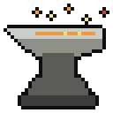
Anvil of the First ForgeEvery upgrade and Imbue gains +1 statUNIQUE
Devil's BargainEach level-up: −5 max HP, +4% damageUNIQUE